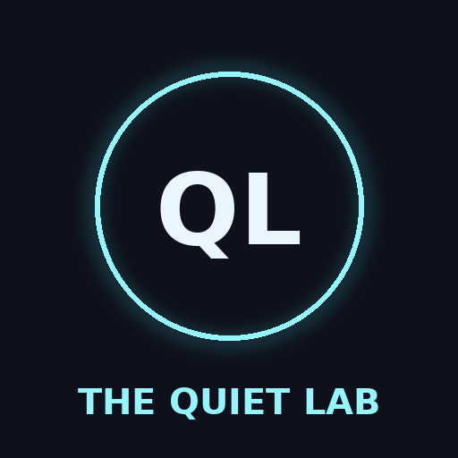
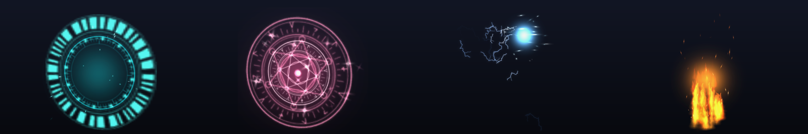
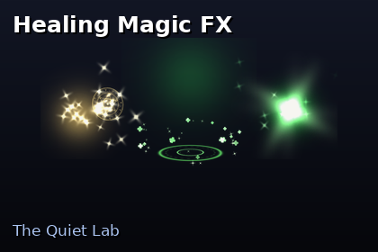
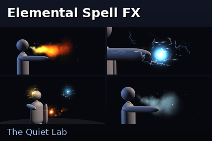
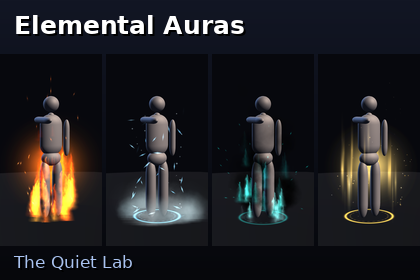
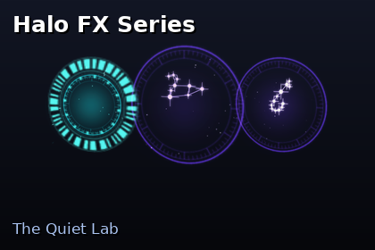
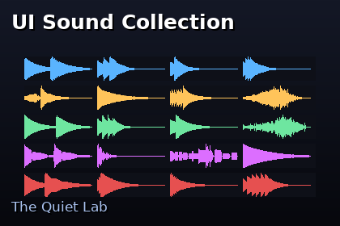

The Quiet Lab is a small independent studio that builds ready-to-use effect and sound packs for Unity developers: particle effects made with Unity's Shuriken system (Built-in and URP) and synthesized interface sounds. Everything in our packs is made in-house, without third-party assets.

Healing circle, heal pulse, healing rain, guardian shield, blessing and wand glow in three colours.

Breath attacks, charge and cast effects and orbiting familiars in six elements.

Character auras, crowns, glows and trails in six elements and six themes.

Floating barcode and constellation halos in several palettes.

275 synthesized UI sounds in five styles: minimal, fantasy, notification, sci-fi and horror.
Questions about a pack? Use the support contact on our Unity Asset Store publisher profile.